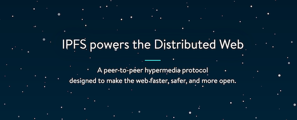
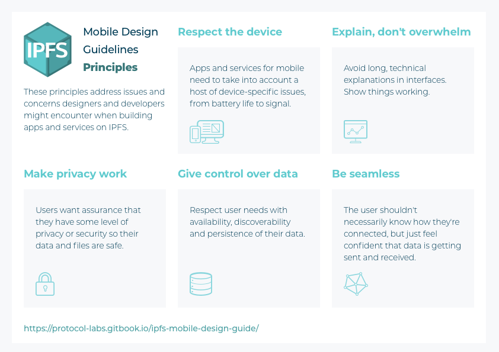
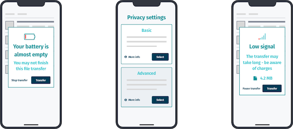
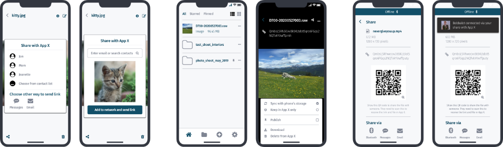
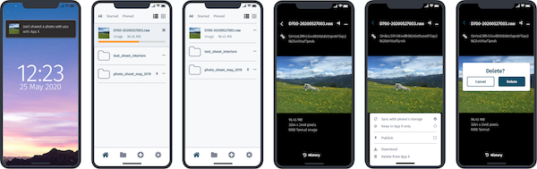
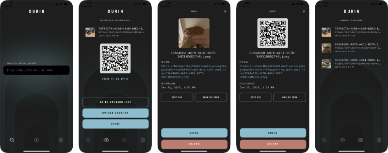

Overview & Challenge
Based on the work started at Protocol Labs with the IPFS Browser Design Guidelines, Protocol Labs was interested developing guides and best practices to building a safer, faster Peer-to-Peer (P2P) Internet to everyone with a smartphone.
The focus of the development of IPFS to date has been primarily on the desktop and servers. However, the growth of the Internet for more than a decade has been almost entirely on mobile devices. Smartphone use has eclipsed desktop, especially in emerging markets, where IPFS stands best to address use cases, patterns and concerns around data sovereignty, offline applications and security.

Role
- Designed and recruited for and conducted the research with three different cohorts
- Developer community engagement
- Designing and facilitating workshops and co-creation sessions
- Interface and interaction design
Approach
To create that level of clarity, designers and developers need clear guidelines that align with user needs to unlock thed power of the decentralised mobile web. These guidelines comprise of two main parts, research and design. The research stretched across North America, Europe and Africa, and consisted of three separate cohorts: Experts, Early Adopters and Potential Users. This qualitative, primary research was tempered with examining the existing P2P and related software application landscape and surveying existing mobile design patterns and attitudes.
Results
The research formed the basis to the design which served to further explore and define how IPFS should be used in a mobile context. This was done by first establishing design principles which then informed and gave shape to a number of design scenarios which further illustrate how IPFS should work for people on their smartphones today.
IPFS Mobile Design Guidelines on GitBook
Principles
We developed a number of Design Principles for designing for IPFS. These are suggestions for designers and developers of what to think about when building their apps and services on IPFS.


Scenarios
Following the Principles we then created Design Scenarios to help designers and developers with situations they are likely to encounter when creating mobile apps and services for IPFS. The scenarios include onboarding, sharing through the mobile OS, sending large files, offline media and identity management. Below are two examples:
Sharing a file on mobile with/without internet access

Large file sent to other user with/without internet access

Durin
Protocol Labs then used the design principles and guidance to go on to develop native apps available on both the iOS and Android app stores, to utilise and test out the principles and guidelines called Durin.

Durin is open source and available on the Github repo.